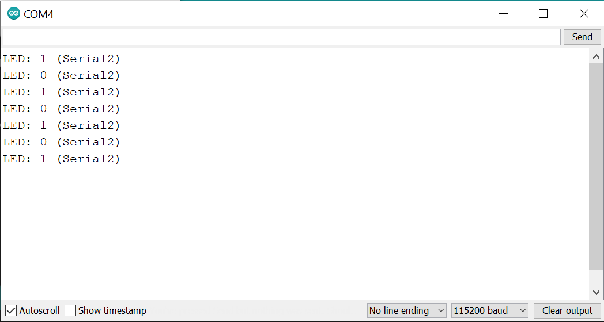

การเขียนโปรแกรม Arduino สำหรับบอร์ด STM32 Nucleo#
Keywords: Arduino IDE, STM32duino, STM32 Nucleo, Nucleo-L432KC
▷ STM32Duino สำหรับ Arduino IDE#
บทความนี้กล่าวถึง การทดลองใช้งาน STM32duino ซึ่งเป็น Arduino Core สำหรับไมโครคอนโทรลเลอร์ตระกูล STM32 ที่นำมาติดตั้งและใช้งานได้ร่วมกับซอฟต์แวร์ Arduino IDE
การเลือกใช้เครื่องมือเหล่านี้ อาจช่วยให้ผู้ที่สนใจเริ่มต้นใช้งานบอร์ดไมโครคอนโทรลเลอร์ STM32 ได้ง่ายขึ้น (โดยเฉพาะอย่างยิ่งผู้ที่คุ้นเคยกับการเขียนโปรแกรม Arduino มาก่อน) และยังสามารถใช้ได้กับบอร์ด Nucleo-32 / Nucleo-64 / Nucleo-144 / Discovery หลาย ๆ บอร์ดของบริษัท STMicroelectronics และบอร์ดของบริษัทอื่นที่ใช้ชิป STM32
อย่างไรก็ตาม ถ้าต้องการใช้งานบอร์ดหรือชิป MCU ของ STMicroelectronics ในเชิงลึก แนะนำให้ใช้ภาษา C/C++ ร่วมกับ STM32Cube HAL (Hardware Abstraction Layer) หรือจะฝึกเขียนโค้ดโดยใช้ RTOS อย่างเช่น Mbed OS หรือ Zephyr RTOS ก็ได้
รูป: ซอฟต์แวร์ที่เกี่ยวข้องกับการเขียนโปรแกรมไมโครคอนโทรลเลอร์ STM32 (Source: STMicroelectronics)
▷ การติดตั้ง STM32Duino สำหรับ Arduino IDE#
ขั้นตอนการติดตั้ง STM32Duino
- เปิดใช้งาน Arduino IDE แล้วไปยังเมนู "File > Preferences"
- เพิ่มรายการ URL ของไฟล์ .json ต่อไปนี้ ซึ่งจะใช้สำหรับ STM32 Core และอยู่ใน Github
package_stmicroelectronics_index.json - ไปยังเมนู "Tools > Board: ... > Boards Manager ..."
- ในหน้าต่าง Boards Manager จะมีรายการ STM32 MCU based Boards ให้เลือก Install
- ติดตั้ง STM32 Cores ซึ่งจะทำการดาวน์โหลดไฟล์ต่าง ๆ ที่เกี่ยวข้องจากอินเทอร์เน็ต
แนะนำให้ศึกษาข้อมูลเพิ่มเติมจากไฟล์ README.md ใน Github ของ STM32duino

รูป: เนื้อหาบางส่วนในไฟล์ README.md
รูป: การเพิ่มรายการไฟล์ .json เพื่อติดตั้ง Arduino Boards Manager สำหรับ STM32duino
รูป: การเลือกเวอร์ชันของ STM32duino เพื่อติดตั้งใช้งาน (เช่น 2.2.0 เป็นเวอร์ชันล่าสุดที่ได้ทดลองใช้งาน)

รูป: ขั้นตอนการดาวน์โหลดไฟล์ที่เกี่ยวข้องจากอินเทอร์เน็ตโดยอัตโนมัติเพื่อติดตั้ง STM32duio
ตัวอย่างโค้ดและการใช้งานไลบรารีของ STM32duino ได้จาก
- https://github.com/stm32duino/STM32Examples
- https://github.com/stm32duino/Arduino_Core_STM32/tree/main/libraries
ตัวอย่างไลบรารีสำหรับ STM32Duino เช่น
- STM32FreeRTOS สำหรับผู้ที่ต้องการใช้งาน FreeRTOS
- STM32Ethernet สำหรับเขียนโค้ดเพื่อส่งข้อมูลในเครือข่ายด้วยโพรโทคอล TCP/IP Stack (ใช้ไลบรารี LwIP เป็นพื้นฐานในการทำงาน) หากใช้บอร์ด NUCLEO ที่รองรับการใช้งาน Ethernet เช่น Nucleo-F429ZI และไลบรารีใช้งานได้เหมือน Arduino Ethernet API
- STM32RTC สำหรับการใช้งานวงจร RTC (Real-Time Clock) ที่เป็นวงจรอยู่ภายในชิป STM32
- STM32SD สำหรับการเขียนอ่านข้อมูลลงใน MicroSD โดยใช้ไลบรารี FatFS (FAT-based File System) เป็นพื้นฐานในการทำงาน
▷ บอร์ดไมโครคอนโทรลเลอร์ Nucleo L432KC#
บอร์ด Nucleo L432KC เป็นบอร์ดไมโครคอนโทรลเลอร์ที่ใช้ชิป STM32L432KC (32-bit ARM Cortex-M4F) เริ่มมีการจำหน่ายในปีค.ศ. 2016 (Initial release)
ข้อมูลเชิงเทคนิค
- Package: UFQFPN32
- CPU: ARM 32-bit Cortex-M4 CPU with FPU
- CPU frequency: 80MHz (max.)
- VDD: from 1.65V to 3.6V (3.3V typ.)
- On-chip memory
- 256 KB Flash
- 64 KB SRAM
- Peripherals
- GPIO (20) with external interrupt capability
- General-Purpose Timers (4)
- SPI/I2S (2)
- I2C (2)
- USART (2)
- 12-bit ADC with 10 channels (5 Msps)
- 12-bit DAC with 2 channels
- RTC
- CAN Controller
- USB 2.0 full-speed (crystal less)
- Random Generator (TRNG for HW entropy)
- Onboard ST-LINK/V2-1 debugger/programmer
- Board voltage supply: VUSB (5V), VIN (7 - 12V)
- Arm Mbed Enabled compliant

รูป: บอร์ด Nucleo L432KC และ Pinmap ซึ่งเป็นแผนผังแสดงตำแหน่งของขาต่าง ๆ
รูป: Nucleo L432KC - Arduino Pins
รูป: ผังวงจรของบอร์ด Nucleo L432KC (ไม่รวมส่วนที่เป็นวงจร ST-Link/v2)
อ้างอิงจาก: https://os.mbed.com/platforms/ST-Nucleo-L432KC/
บอร์ดในกลุ่มที่เรียกว่า STM32 Nucleo-32 ใช้ชิปที่มี 32 ขา ตัวถังของไอซีแบบ LQFP32 หรือ UFQFPN32 มีการจัดวางขาบนบอร์ดเหมือน Arduino Nano และมีให้เลือกใช้งานอยู่หลายบอร์ด การออกแบบบอร์ดในกลุ่มนี้อ้างอิงตาม MB1180 Reference Board เช่น
- NUCLEO-F031K6
- NUCLEO-F042K6
- NUCLEO-F301K8
- NUCLEO-F303K8
- NUCLEO-L011K4
- NUCLEOL031K6
- NUCLEO-L412KB
- NUCLEO-L432KC
รูป: ตัวเลือกสำหรับบอร์ด NUCLEO ของบริษัท STMicroelectronics
บอร์ด Nucleo-32 ได้รวมวงจร ST-LINK/V2 In-Circuit Debugger / Programmer มาให้แล้ว (วงจรอยู่ด้านล่างของแผ่น PCB ส่วนด้านบนเป็นวงจรของ STM32L432KC)
เมื่อเสียบสาย MicroUSB เชื่อมต่อบอร์ดกับคอมพิวเตอร์ของผู้ใช้ บอร์ดจะได้รับการจ่ายแรงดันไฟเลี้ยง (VUSB=+5V และใช้กระแสไฟฟ้าไม่เกิน 300 mA) สังเกตที่ตัวไดโอดเปล่งแสง (LED) ซึ่งมีตัวหนังสือเขียนกำกับไว้ LD2 จะสว่างขึ้น และในคอมพิวเตอร์ของผู้ใช้ จะมองเห็นอุปกรณ์ 3 กรณี ดังนี้
- ST-Link Debugger ใช้สำหรับการอัปโหลดไฟล์ .bin หรือดีบักการทำงานของโปรแกรมโดยใช้ฮาร์ดแวร์ วงจร ST-Link เชื่อมต่อกับขา SWCLK / SWDIO (SWD interface) ของชิป STM32 (Target Device) บนบอร์ด
- Virtual COM port ใช้สำหรับสื่อสารข้อมูลผ่านพอร์ตอนุกรมที่ขา PA2 / PA15 (VCP_TX / VCP_RX) ของชิป STM32 ผ่านทางวงจร ST-Link ซึ่งทำหน้าที่เป็นวงจร USB-to-Serial
- Mass storage มองเห็นเป็นชื่อไดรฟ์ เช่น
NUCLEO_L432KCใช้สำหรับการอัปโหลดไฟล์ .bin ไปชิปไมโครคอนโทรลเลอร์ โดยการลากไฟล์มาวาง (Drag & Drop)
ข้อสังเกต:
- ขา VIN บนบอร์ด สามารถใช้สำหรับการป้อนแรงดันไฟเลี้ยงได้ และรับแรงดันได้ในช่วง 7V ถึง 12V และมีวงจรแปลงแรงดันลง (เป็นแบบ Linear Voltage Regulator) ให้มีแรงดันคงที่ +5V (regulated)
- ถ้าจ่ายไฟ +5V เข้าที่ขา 5V pin บนบอร์ด วงจร ST-Link จะไม่ทำงาน เพราะวงจรส่วนนี้ จะต้องใช้แรงดันไฟเลี้ยงจาก VUSB หรือขา VIN เท่านั้น
- บอร์ด Nucleo L432KC มีวงจรคริสตัลสำหรับสร้างความถี่ 32.768 kHz (LSE)
- ขา PA9 / D1 และ PA10 / D0 ตรงกับขา USART1_TX และ USART1_RX ตามลำดับ
- ขา PA2 และ PA15 ตรงกับขา VCP_TX และ VCP_RX ตามลำดับ
- ที่ตำแหน่งขา D2 กับขา GND บนบอร์ด Nucleo-32 ได้มีการใส่ Jumper เอาไว้ ถ้าจะใช้งานบอร์ด ให้ถอด Jumper ดังกล่าวออกก่อน
▷ ตัวอย่างโค้ด 1: Blink the on-board LED#
โค้ดตัวอย่างที่ 1 สาธิตการทำให้ LED บนบอร์ด ซึ่งเป็นวงจรเอาต์พุตที่ต่ออยู่ที่ขา D13 (Arduino Pin) หรือขา PB_3 (MCU Pin) เกิดการกระพริบ โดยกำหนดสถานะลอจิกเป็นเอาต์พุตสลับ LOW (0) และ HIGH (1) โดยเว้นระยะประมาณ 100 มิลลิวินาที
#define LED_PIN PB3 // PB_3 (MCU pin) or D13 (Arduino pin)
#define DELAY_MS 100
void setup() {
pinMode( LED_PIN, OUTPUT ); // configure LED_PIN as output
}
void loop() {
static int state = 0; // used to keep the LED state
digitalWrite( LED_PIN, state ); // update the output
state ^= 1; // toggle the LED state
delay( DELAY_MS ); // delay (in msec)
}
ก่อนทำขั้นตอน Verify & Upload เพื่อคอมไพล์และอัปโหลด Arduino Sketch ให้ตรวจสอบการตั้งค่าใช้งานดังนี้
- เลือกบอร์ด Nucleo-32 / Nucleo L432KC
- เลือก U(S)ART Support: Enabled (generic Serial)
- เลือก USB Support (if available): None
- เลือก STM32CubeProgrammer (SWD) หรือเลือกวิธี Mass Storage (แนะนำวิธีนี้) สำหรับ Upload Method
- เลือกพอร์ต Serial / COM port ที่ตรงกับบอร์ดในขณะที่เชื่อมต่อใช้งานผ่านทางพอร์ต USB
ข้อสังเกต: โปรแกรมต่าง ๆ ที่เกี่ยวข้องกับ STM32duino จะถูกติดตั้งไว้ในไดเรกทอรีสำหรับผู้ใช้ เช่น สำหรับ Windows ดังนี้
C:\Users\%username%\AppData\Local\Arduino15\packages\STMicroelectronics
ภายในไดเรกทอรีดังกล่าว หากดูในไดเรกทอรีย่อย .\tools\STM32Tools\2.1.1 (เวอร์ชันล่าสุดที่ได้ทดลองใช้งาน)
จะมีไฟล์ stm32CubeProg.sh ที่ใช้สำหรับการอัปโหลดไฟล์ .bin ไปยังบอร์ด STM32
ในการใช้งาน STM32CubeProgrammer (SWD) ภายในการทำงานของ Arduino IDE จะต้องมีการติดตั้ง
ซอฟต์แวร์ STM32CubeProgrammer ก่อน และเพิ่มรายการ PATH ในระบบให้เรียกใช้ได้แบบ Command Line
รูป: ตรวจสอบการตั้งค่าสำหรับ Arduino Sketch เพื่อใช้งานกับบอร์ด Nucleo L432KC
รูป: ตัวอย่างข้อความเอาต์พุตเมื่อทำขั้นตอน Upload ได้สำเร็จแล้ว
โค้ดตัวอย่างต่อไปนี้ แสดงข้อมูลเกี่ยวกับระบบ เช่น ความถี่ในการทำงานของซีพียู ความจุของหน่วยความจำ Flash และตัวเลข CPU ID (32-bit) และ Unique Device ID (96-bit) เป็นต้น
void sysinfo() {
pinMode( LED_BUILTIN, OUTPUT );
Serial.printf( "CPU frequency: %lu MHz\n", SystemCoreClock/1000000UL );
Serial.printf( "Flash size: %u KB\n", *(uint16_t *)FLASHSIZE_BASE );
Serial.printf( "Unique device ID (96-bit): 0x%08X%08X%08X\n",
*(uint32_t *)(UID_BASE),
*(uint32_t *)(UID_BASE+4),
*(uint32_t *)(UID_BASE+8) );
Serial.printf( "CPUID (32-bit): 0x%08X\n",
*(uint32_t *)(SCB_BASE) );
Serial.printf( "LED_BUILTIN: %d (%d)\n\n", LED_BUILTIN, PB3 );
}
void setup() {
pinMode( LED_BUILTIN, OUTPUT ); // configure LED_PIN as output
Serial.begin( 115200 );
// 02020000 = v2.2.0
Serial.printf( "STM32_CORE_VERSION: %08x", STM32_CORE_VERSION );
}
void loop() {
static int state = 0;
sysinfo();
digitalWrite( LED_BUILTIN, state ^= 1 );
delay(1000);
}
รูป: ตัวอย่างข้อความเอาต์พุตแสดงผลใน Arduino Serial Monitor
▷ ตัวอย่างโค้ด 2: Press the button to toggle the LED (Interrupt-based Method)#
โค้ดตัวอย่างที่ 2 สาธิตการใช้คำสั่ง attachInterrupt() ของ Arduino API
สำหรับเปิดใช้งานอินเทอร์รัพท์ภายนอก (External Interrupt)
ร่วมกับขาอินพุตที่ต่อกับวงจรปุ่มกดภายนอก
ซึ่งเป็นวงจรปุ่มกดแบบ Active-Low ที่ขา D12 หรือ PB_4
เมื่อมีการกดปุ่มแต่ละครั้ง จะทำให้เกิดอินเทอร์รัพท์หนึ่งครั้ง และจะมีการทำคำสั่งต่าง ๆ ในฟังก์ชัน irq_handler()
ซึ่งส่งผลให้มีการเปลี่ยนสถานะสำหรับเอาต์พุต LED ของบอร์ด
#define LED_PIN PB3 // PB_3 or D13 pin
#define BTN_PIN PB4 // PB_4 or D12 pin
#define COUNTDOWN_MAX (16)
volatile bool state_changed = false;
char sbuf[64]; // string buffer (char array)
void irq_handler( ) { // triggered on the falling edge
detachInterrupt( BTN_PIN ); // disable the interrupt
state_changed = true; // set 'state_changed' flag
}
void setup() {
// configure the button pin as input
pinMode( BTN_PIN, INPUT_PULLUP ); // enable internal pull-up
// configure the LED pin as output
pinMode( LED_PIN, OUTPUT );
// update the LED output
digitalWrite( LED_PIN, LOW );
// specify the baudrate and start the serial
Serial.begin( 115200 );
// send a string to the serial
Serial.println( "Arduino-STM32 Programming - Nucleo L432KC..." );
// enable the external interrupt on the push button
attachInterrupt( BTN_PIN, irq_handler, FALLING );
}
void loop() {
// if an button-change event is detected
if ( state_changed ) {
uint16_t bits; // used to keep the input sample
// sample the button input pin
for ( int i=0; i < 16; i++ ) {
bits = (bits << 1) | digitalRead( BTN_PIN );
delay(2);
}
if (bits == 0) { // if the input pin is low and stable
// toggle and update the LED output
int state = !digitalRead(LED_PIN);
digitalWrite( LED_PIN, state );
sprintf( sbuf, "LED state: %d @%lu", state, millis() );
Serial.println( sbuf );
Serial.flush();
}
uint32_t countdown = COUNTDOWN_MAX;
while ( countdown ) {
// decrement if the input button is high,
// otherwise reset to initial value
if ( digitalRead(BTN_PIN) ) {
countdown--;
} else {
countdown = COUNTDOWN_MAX;
}
delay(2);
}
state_changed = false; // clear flag
// re-enable the external interrupt on the push button
attachInterrupt( BTN_PIN, irq_handler, FALLING );
}
else
delay(10);
}
▷ ตัวอย่างโค้ด 3: PWM-based LED Dimming#
โค้ดตัวอย่างที่ 3 สาธิตการปรับความสว่างของ LED เมื่อต่อกับขา D13 หรือ PB_3
โดยใช้เทคนิคที่เรียกว่า PWM (Pulse-Width Modulation)
และสามารถทำได้โดยเรียกใช้คำสั่ง analogWrite()
#define PWM_LED_PIN PB3 // PB_3 or D13 pin
#define DELAY_MS 5
uint8_t value = 0; // used to store the PWM duty cycle between 0..255
int pm = 1; // 1 or -1
void setup() {
pinMode( PWM_LED_PIN, OUTPUT );
analogWrite( PWM_LED_PIN, value );
}
void loop() {
if ( value == 255 && pm == 1 ) {
pm = -1; // decrement
} else if ( value == 0 && pm == -1 ) {
pm = 1; // increment
}
value += pm;
analogWrite( PWM_LED_PIN, value );
delay( DELAY_MS );
}
▷ ตัวอย่างโค้ด 4: Timer-based LED Toggle#
โค้ดตัวอย่างที่ 4 สาธิตการใช้ไลบรารี HardwareTimer ของ STM32Duino
ซึ่งสามารถเลือกใช้กับวงจรตัวนับภายในได้ เช่น TIM1 หรือ TIM2 เป็นต้น
เพื่อทำหน้าที่เป็นตัวนับตามจังหวะของสัญญาณ Clock เช่น 10 Hz
และมีการสร้างฟังก์ชันสำหรับ Callback ที่จะถูกเรียกทุก ๆ 0.1 วินาที
และนำมาใช้ในการสลับสถานะของ LED บนบอร์ดทดลอง
#define LED_PIN PB3 // PB_5 or D13 pin
#define USE_TIM TIM2
HardwareTimer *timer = NULL;
void timer_callback( void ) {
static int state = 0;
state ^= 1; // toggle the state
digitalWrite( LED_PIN, state ); // update the LED output
}
void setup() {
pinMode( LED_PIN, OUTPUT );
timer = new HardwareTimer( USE_TIM );
timer->setOverflow( 10, HERTZ_FORMAT ); // timer frequency = 10 Hz
timer->attachInterrupt( timer_callback );
timer->resume();
}
void loop() {}
▷ ตัวอย่างโค้ด 5: BH1750 Light Sensor Reading (I2C)#
โค้ดตัวอย่างที่ 5 สาธิตการอ่านข้อมูลจากโมดูล BH1750 ซึ่งเป็นเซ็นเซอร์วัดความเข้มแสง โดยเชื่อมต่อกับบัส I2C ที่ขา PB_6 / I2C1_SCL และ PB_7 / I2C1_SDA และใช้แรงดันไฟเลี้ยง +3.3V และ GND ป้อนให้โมดูลเซ็นเซอร์
ในกรณีนี้ STM32 ทำหน้าที่เป็น I2C Master และในการเขียนโปรแกรมเราสามารถใช้ไลบรารี
Wire
ของ STM32duino ได้ (ดูตัวอย่างการใช้งานไลบรารีนี้ได้จาก
"STM32duino Wire Examples")
ตัวอย่างนี้กำหนดค่าให้ BH1750 ทำงานในโหมดที่เรียกว่า Continuously H-Resolution Mode โดยจะวัดค่าความเข้มแสงต่อเนื่องไปเรื่อย ๆ และจะมีการวัดและอัปเดทค่าทุก ๆ 120 มิลลิวินาที
#include <Wire.h> // requires the Wire library
#define SCL_PIN PB6 // PB_6 or D5 pin
#define SDA_PIN PB7 // PB_7 or D4 pin
#define BH1750_I2CADDR 0x23 // 0x23 or 0x5c
#define BH1750_CONT_HIGH_RES_MODE 0x10 // Continuously H-Resolution Mode
bool bh1750_init() {
Wire.beginTransmission( BH1750_I2CADDR );
Wire.write( (uint8_t) BH1750_CONT_HIGH_RES_MODE );
uint8_t error = Wire.endTransmission();
delay(120);
if ( error != 0 ) {
Serial.println( "No ACK from sensor !!!" );
return false;
}
return true;
}
boolean bh1750_read( uint16_t *lux_value ) {
uint16_t level;
boolean ok = true;
// Start transmission to the sensor (I2C slave)
Wire.beginTransmission( BH1750_I2CADDR );
// Read two bytes from sensor (MSB and LSB bytes)
Wire.requestFrom( BH1750_I2CADDR, 2 );
if ( Wire.available() == 2 ) {
level = Wire.read();
level <<= 8;
level |= Wire.read();
} else {
ok = false;
}
Wire.endTransmission();
// Divide the 16-bit raw value by 1.2 to get the value in Lux
*lux_value = ok ? (10UL * level)/12 : 0;
return ok;
}
void setup() {
Serial.begin( 115200 );
Wire.setSDA( SDA_PIN );
Wire.setSCL( SCL_PIN );
Wire.begin();
Wire.setClock( 400000 ); // 400kHz speed
delay(10);
while( !bh1750_init() ) {
Serial.println( "BH1750 initialization failed!" );
delay(1000);
}
Serial.println( "\n\nBH1750 initialization OK!\n" );
}
void loop() {
uint16_t lux;
if ( bh1750_read( &lux ) ) { // if sensor reading is OK
Serial.printf( "Light: %5d Lux\n", lux );
} else {
Serial.printf( "Light: ----- Lux\n" );
}
delay(500);
}
รูป: การต่อวงจรทดลองร่วมกับโมดูล BH1750
▷ ตัวอย่างโค้ด 6: SHT3x-DIS Sensor Reading (I2C)#
โค้ดตัวอย่างที่ 6 สาธิตการอ่านข้อมูลจากโมดูลเซนเซอร์วัดอุณหภูมิและความชื้นสัมพัทธ์ SHT3x-DIS โดยเชื่อมต่อกับบัส I2C ที่ขา PB_8 / I2C1_SCL และ PB_9 / I2C1_SDA และใช้แรงดันไฟเลี้ยง +3.3V
ในกรณีนี้ STM32 ทำหน้าที่เป็น I2C Master และในการเขียนโปรแกรมเราสามารถใช้ไลบรารี
Wire
ของ STM32duino ได้
#include <Wire.h>
#define SCL_PIN PB6 // PB_6 or D5 pin
#define SDA_PIN PB7 // PB_7 or D4 pin
#define SHT3x_I2C_ADDR 0x44 // SHT3x-DIS (I2C)
// single shot mode, no clock stretching
#define SHT3x_ACCURACY_HIGH 0x2C06
#define SHT3x_ACCURACY_MEDIUM 0x2C0D
#define SHT3x_ACCURACY_LOW 0x2C10
#define SHT3x_SOFT_RESET 0x30A2
TwoWire i2c( SDA_PIN, SCL_PIN );
char sbuf[64];
uint32_t ts;
float temp, humid;
uint8_t data[6];
// CRC-8, Polynomial: 0x31 = x^8 + x^5 + x^4 + 1, Initial value = 0xff
uint8_t CRC8( uint8_t data[], uint8_t len ) {
uint8_t crc = 0xFF;
for ( uint8_t i=0; i < len; i++ ) {
crc ^= data[i];
for ( uint8_t j=0; j < 8; j++ ) {
crc = crc & 0x80 ? (crc << 1) ^ 0x31 : crc << 1;
}
}
return crc;
}
void sht3x_init() {
// Start I2C Transmission
i2c.beginTransmission( SHT3x_I2C_ADDR );
// Send soft reset command
i2c.write( (SHT3x_SOFT_RESET >> 8) & 0xff );
i2c.write( SHT3x_SOFT_RESET & 0xff );
i2c.endTransmission(); // Stop I2C transmission
delay(10);
i2c.beginTransmission( SHT3x_I2C_ADDR );
// Send soft reset command
i2c.write( (SHT3x_ACCURACY_HIGH >> 8) & 0xff );
i2c.write( SHT3x_ACCURACY_HIGH & 0xff );
i2c.endTransmission(); // Stop I2C transmission
}
bool sht3x_read_sensor() {
memset( data, 0x00, 6 );
data[3] = data[5] = 0xff;
// Start I2C Transmission
i2c.beginTransmission( SHT3x_I2C_ADDR );
// Send measurement command
i2c.write( (SHT3x_ACCURACY_HIGH >> 8) & 0xff );
i2c.write( SHT3x_ACCURACY_HIGH & 0xff );
i2c.endTransmission(); // Stop I2C transmission
delay(20); // note: measurement time is about 15 msec
// Request 6 bytes of data
i2c.requestFrom( SHT3x_I2C_ADDR, 6 ); // request 6 bytes
if ( i2c.available() == 6 ) {
data[0] = i2c.read(); // temperature Celsius (MSB: high byte)
data[1] = i2c.read(); // temperature Celsius (LSB: low byte)
data[2] = i2c.read(); // temperature Celsius CRC
data[3] = i2c.read(); // relative humidty (%RH) (MSB: high byte)
data[4] = i2c.read(); // relative humidty (%RH) (LSB: low byte)
data[5] = i2c.read(); // relative humidty CRC
} else {
Serial.println("SHT3x sensor reading error\n");
return false;
}
// check CRC for both values
if ( CRC8(data,2)==data[2] && CRC8(data+3,2)==data[5] ) {
uint16_t value;
value = (data[0] << 8) + data[1];
temp = ((value * 175.0) / 65535) - 45; // temperature in Celsius.
value = (data[3] << 8) + data[4];
humid = ((value * 100.0) / 65535); // relative humidity
return true;
}
Serial.println("Checksum error\n");
return false;
}
void setup() {
Serial.begin( 115200 ); // set serial baudrate to 115200
i2c.begin( ); // start the I2C bus
i2c.setClock( 400000 ); // set I2C clock frequency to 400kHz
sht3x_init(); // initalize the SHT3x-DIS
ts = millis();
}
void loop() {
if ( millis() - ts >= 1000 ) { // read sensor every 1000 msec
String str;
ts += 1000;
if ( sht3x_read_sensor() ) {
str = "";
dtostrf( humid, 3, 1, sbuf );
str += "Humidity: ";
str += sbuf;
str += " %RH, ";
dtostrf( temp, 3, 1, sbuf );
str += "Temperature: ";
str += sbuf;
str += " deg.C";
Serial.println( str.c_str() );
}
else {
Serial.println( "Sensor reading failed..." );
}
}
}
รูป: การต่อวงจรทดลองร่วมกับโมดูล SHT3x
รูป: ตัวอย่างข้อความเอาต์พุตที่ได้จากการอ่านเซ็นเซอร์
▷ ตัวอย่างโค้ด 7: Serial Bridge#
โค้ดตัวอย่างที่ 7 สาธิตการใช้ฮาร์ดแวร์ภายในที่เป็น USART จำนวน 2 ชุด พร้อมกัน (Serial และ Serial1)
โดยทำหน้าที่เป็น Serial Bridge คือ ถ้าได้รับข้อมูลจากขา RX ของ Serial
ก็จะส่งออกทางขา TX ของ Serial1 หรือถ้ารับข้อมูลจากขา RX ของ Serial1
ก็จะส่งออกทางขา TX ของ Serial ในการทดลองนี้ จะต้องใช้โมดูล USB-to-Serial (3.3V logic level)
มาต่อกับขา RX / TX ของ Serial1
ข้อสังเกต: Serial ตรงกับ USART2 ซึ่งเป็นพอร์ตอนุกรมที่ต่อผ่าน ST-Link/V2
บนบอร์ดทดลอง และ Serial1 (ซึ่งสร้างจากคลาส
HardwareSerial)
ตรงกับ USART1 ซึ่งจะใช้ต่อเข้ากับโมดูล USB-to-Serial
// USART2: USART2_TX = PA2 / VCP_TX and USART2_RX = PA15 / VCP_RX
// USART1: USART1_TX = PA9 / D1 and USART1_RX = PA10 / D0
HardwareSerial Serial1( PA10, PA9 );
void setup() {
Serial.begin( 115200 ); // Serial = Serial2 for Nucleo L432KC Board
Serial1.begin( 115200 ); // PA_9/D1=TX, PA_10/D0=RX (USART1)
}
void loop() {
while ( Serial.available() > 0 ) {
// read one char from Serial Rx and write it to Serial1 Tx
char ch = Serial.read();
Serial1.write( ch );
}
while ( Serial1.available() > 0 ) {
// read one char from Serial1 Rx and write it to Serial Tx
char ch = Serial1.read();
Serial.write( ch );
}
}
▷ ตัวอย่างโค้ด 8: การอ่านตัวเลขสุ่มจากวงจร RNG#
ตัวอย่างนี้สาธิตการเขียนโค้ดด้วยวิธีเข้าถึงรีจิสเตอร์ของวงจรภายในชิป STM32L4 ที่เรียกว่า Hardware-RNG (Hardware Random Number Generator) เพื่อเปิดใช้งานวงจรดังกล่าวและอ่านค่าตัวเลขสุ่มขนาด 32 บิต ดังนั้นจึงเป็นตัวอย่างการเขียนโค้ดในรูปแบบที่เรียกว่า "Bare-Metal"
#include "stm32l4xx.h"
void RNG_Config( void ) {
// enable peripheral clock for RNG
RCC->AHB2ENR |= RCC_AHB2ENR_RNGEN;
// reset the RNG peripheral
RCC->AHB2RSTR |= RCC_AHB2RSTR_RNGRST;
RCC->AHB2RSTR &= ~RCC_AHB2RSTR_RNGRST;
// enable RNG
RNG->CR |= RNG_CR_RNGEN;
}
boolean RNG_Read( uint32_t *value ) {
uint32_t timeout = 255;
// busy-wait until the RNG is ready (with timeout)
while ( !(RNG->SR & RNG_SR_DRDY) ) {
if (timeout == 0) break;
timeout--;
}
uint32_t is_error = (RNG->SR & (RNG_SR_SECS|RNG_SR_CECS));
if ( (timeout>0) && (is_error==0) ) {
*value = (uint32_t)RNG->DR; // read the data register of RNG
return true; // success
}
*value = 0xffffffff;
return false; // error
}
void setup() {
pinMode( LED_BUILTIN, OUTPUT );
Serial.begin( 115200 ); // the same as Serial when using USB CDC
Serial.printf( "\n\nSTM32L432KC RNG Demo...\n" );
RNG_Config();
}
void loop() {
// read four 32-bit random values from RNG
for ( int i=0; i < 4; i++ ) {
uint32_t value;
if ( RNG_Read( &value ) ) {
Serial.printf( "%08X ", value );
} else {
Serial.print( "-------- " );
}
}
Serial.print( "\n" );
// toggle the LED
digitalWrite( LED_BUILTIN, !digitalRead( LED_BUILTIN ) );
delay(100);
}
รูป: ตัวอย่างข้อความเอาต์พุต
แต่หากจะลองเขียนโค้ด โดยใช้ฟังก์ชันของ STM32L4-HAL (Hardware Abstraction Layer) เพื่อใช้งาน Hardware RNG ก็มีตัวอย่างดังนี้ (ดูตัวอย่าง RNG_MultiRNG ที่ใช้ STM32-HAL API สำหรับ NUCLEO-L432KC ของ STM32CubeL4)
#include "stm32l4xx.h"
#include "stm32l4xx_hal.h"
#include "stm32l4xx_hal_rng.h"
RNG_HandleTypeDef hrng; // the Hardware RNG instance
void RNG_Config( void ) {
RCC_PeriphCLKInitTypeDef PeriphClkInitStruct;
PeriphClkInitStruct.PeriphClockSelection = RCC_PERIPHCLK_RNG;
// Choose the MSI as the clock source for the RNG peripheral
PeriphClkInitStruct.RngClockSelection = RCC_RNGCLKSOURCE_MSI;
if (HAL_RCCEx_PeriphCLKConfig(&PeriphClkInitStruct) != HAL_OK) {
Serial.println(" RNG clock configuration error !!!\n" );
}
// Enable the RNG peripheral clock
__HAL_RCC_RNG_CLK_ENABLE();
// Activate the RNG peripheral
hrng.Instance = RNG;
hrng.State = HAL_RNG_STATE_RESET;
hrng.Lock = HAL_UNLOCKED;
#ifdef RNG_CR_CED
hrng.Init.ClockErrorDetection = RNG_CED_ENABLE;
#endif
if ( HAL_RNG_Init(&hrng) != HAL_OK ) {
Serial.println( "HAL_RNG_Init() failed !!!" );
Serial.printf( "RNG state: %lu\n", HAL_RNG_GetError(&hrng) );
}
}
boolean RNG_Read( uint32_t *value ) {
*value = 0xffffffff;
if ( HAL_RNG_GenerateRandomNumber( &hrng, value )==HAL_OK ) {
return true;
}
return false;
}
void setup() {
pinMode( LED_BUILTIN, OUTPUT );
Serial.begin( 115200 ); // the same as Serial when using USB CDC
Serial.printf( "\n\nSTM32L432KC Hardware RNG Demo...\n" );
RNG_Config();
}
void loop() {
// read four 32-bit random values from RNG
for ( int i=0; i < 4; i++ ) {
uint32_t value;
if ( RNG_Read( &value ) ) {
Serial.printf( "%08X ", value );
} else {
Serial.print( "-------- " );
}
}
Serial.print( "\n" );
// toggle the LED
digitalWrite( LED_BUILTIN, !digitalRead( LED_BUILTIN ) );
delay(500);
}
หากจะคอมไพล์โค้ดตัวอย่างนี้ใน Arduino IDE ให้สร้างไฟล์ชื่อ build_opt.h เพิ่มในไดเรกทอรีของ
Arduino Sketch และใส่ข้อความดังนี้
-DHAL_RNG_MODULE_ENABLED
-DRNG_CR_CED
▷ ตัวอย่างโค้ด 9: การใช้ไลบรารี Adafruit DHT เพื่ออ่านค่าจากโมดูล DHT22 #
ตัวอย่างนี้สาธิตการใช้เขียนโค้ดโดยใช้ฟังก์ชันจากไลบรารีสำหรับ Arduino เพื่ออ่านค่าอุณหภูมิและความชื้นสัมพัทธ์จากโมดูล DHT22
ไปที่เมนูคำสั่ง "Tools > Include Library > Manage Libraries ..." และเมื่อเปิดหน้าต่าง Library Manager ให้ค้นหาชื่อไลบรารี "DHT sensor library" ของ Adafruit แล้วเลือกเวอร์ชันล่าสุดและกดปุ่ม Install เพื่อติดตั้งไลบรารี

รูป: ขั้นตอนการติดตั้งไลบรารี Adafruit DHT sensor library
#include <DHT.h> // Adafruit Unified Sensor (tested with version 1.4.3)
#define DHTPIN PB5 // use D11 pin on NUCEO-L432KC
#define DHTTYPE DHT22
DHT dht(DHTPIN, DHTTYPE); // Initilize object dht for class DHT
// with DHT pin with STM32 and DHT type as DHT22
void setup() {
Serial.begin( 115200 );
Serial.flush();
Serial.println( "STM32duino - DHT22 Demo..." );
dht.begin(); // initialize the DHT22 sensor module
delay(2000); // wait 2 seconds for it to stabilize
}
char sbuf[32];
void loop() {
float h = dht.readHumidity(); // read humidity value
float t = dht.readTemperature() + 0.5; // read temperature value
// T: -40 to +125 degrees Celsius
// H: 0 to 100%
dtostrf( t, 1, 1, sbuf ); // convert float to string
Serial.printf( "T=%s deg.C, ", sbuf );
dtostrf( h, 1, 1, sbuf ); // convert float to string
Serial.printf( "H=%s %%\n", sbuf );
delay( 2000 );
}
รูป: การต่อวงจรทดลองเพื่อใช้งานโมดูล DHT22
รูป: ตัวอย่างข้อความเอาต์พุต
▷ ตัวอย่างโค้ด 10: การใช้งาน Virtual USB#
ชิปไมโครคอนโทรลเลอร์ STM32L432KC รองรับการใช้งาน Native USB และสามารถนำมาใช้งานเป็นอุปกรณ์ประเภท USB Device / FullSpeed ได้ แต่บอร์ด NUCLEO-L432KC ไม่ได้ต่อขาสัญญาณ USB D+ และ USB D- กับคอนเนกเตอร์ MicroUSB สำหรับขาสัญญาณดังกล่าว ดังนั้นหากจะใช้งานในกรณีนี้ จะต้องใช้โมดูลคอนเนกเตอร์ 5-pin MicroUSB Breakout นำมาต่อวงจรเพิ่ม ดังนี้
5-pin MicroUSB -- NUCLEO-L432KC
1) VUSB (5V) -- ไม่ต้องต่อสายไฟ
2) D- -- ต่อกับขา D10 / PA_11 ของบอร์ด NUCLEO-L432KC
3) D+ -- ต่อกับขา D2 / PA_12 ของบอร์ด NUCLEO-L432KC
-- และต่อตัวต้านทาน 1.5k Pull-up ไปยัง +3.3V (สำหรับ FullSpeed)
4) ID (sense) -- ไม่ต้องต่อสายไฟ (floating)
5) GND -- ต่อกับขา GND ของบอร์ด NUCLEO-L432KC
ข้อสังเกต: บอร์ด NUCLEO-L432KC ได้รับแรงดันไฟเลี้ยง +5V จากพอร์ต MicroUSB สำหรับวงจร onboard ST-Link/v2 ดังนั้น เมื่อต้องการใช้ขา USB D+/D- เพิ่ม ไม่จำเป็นต้องต่อแรงดันไฟเลี้ยง VUSB จากพอร์ต MicroUSB ที่ได้นำมาต่อเพิ่ม
รูป: ตัวอย่างการต่อวงจรบนเบรดบอร์ด
ตัวอย่างการเขียนโค้ดเพื่อส่งข้อมูลออกทาง SerialUSB (USB Serial)
และ Serial2 (Hardware Serial)
void setup() {
pinMode( LED_BUILTIN, OUTPUT );
Serial2.begin( 115200 ); // VCP -> onboard ST-Link
SerialUSB.begin( 115200 ); // the same as Serial when using USB CDC
while (!SerialUSB) {} // wait until the virtual COM port is open
SerialUSB.printf( "STM32L432KC - SerialUSB or Serial\n" );
SerialUSB.printf( "STM32L432KC - Serial2\n" );
}
void loop() {
// toggle the LED
int state = !digitalRead( LED_BUILTIN);
digitalWrite( LED_BUILTIN, state );
Serial.printf( "LED: %d (Serial)\n", state );
Serial2.printf( "LED: %d (Serial2)\n", state );
delay(500);
}
ก่อนทำขั้นตอนคอมไพล์โค้ด ให้เปลี่ยนการตั้งค่าดังนี้
รูป: การตั้งค่าใน Arduino IDE เพื่อเปิดใช้งาน USB Support > USB CDC / Serial
เมื่ออัปโหลด Arduino Sketch แล้วเสียบสาย USB ครบทั้งสองเส้น จะมองเห็นรายการอุปกรณ์ USB Serial Devices ดังนี้
รูป: ตัวอย่างรายการของพอร์ตอนุกรมที่มองเห็นในเครื่องของผู้ใช้ (Windows) เช่น COM4 ตรงกับอุปกรณ์ ST-Link/v2 ของบอร์ด NUCLEO-L432KC และ COM6 ตรงกับอุปกรณ์ USB Serial Device ของ NUCLEO-L432KC
รูป: ตัวอย่างข้อความเอาต์พุตที่ถูกส่งออกมาทาง Serial หรือ SerialUSB
(USB Serial Device)

รูป: ตัวอย่างข้อความเอาต์พุตที่ถูกส่งออกมาทาง Serial2 (VCP ST-Link/v2)
▷ กล่าวสรุป#
บทความนี้ได้นำเสนอตัวอย่างการเขียนโค้ดโดยใช้ซอฟต์แวร์ Arduino IDE และได้มีการติดตั้ง STM32duino - Arduino Boards Manager เพื่อนำมาใช้งานกับบอร์ดไมโครคอนโทรลเลอร์ ST NUCLEO อย่างเช่น บอร์ด NUCLEO-L432KC ได้เห็นตัวอย่างการใช้คำสั่ง Arduino API และมีบางตัวอย่างได้เปรียบเทียบการเขียนโค้ดแบบ Bare-Metal การเขียนโค้ดโดยใช้ STM32-HAL API รวมถึงการติดตั้งและใช้งานไลบรารีสำหรับ Arduino
This work is licensed under a Creative Commons Attribution-ShareAlike 4.0 International License.
Created: 2022-01-01 | Last Updated: 2022-03-06